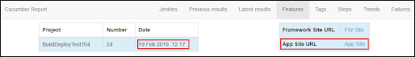

Note the date of the latest merge. Hover over the time frame to see the date details.

Development Changes—Tickets may describe a change that you need to see in the product in order to get a full understanding.
Document Changes—If new GUIDs were added, log in to the SST to verify the page-to-help link is correct.
Prerequisites: You will need a log in to Jenkins and access to the appropriate development Slack channel.
NOTE: Refer to Jenkin’s online resources to learn more.
Add yourself to the Slack channel for the latest development cycle. For example, the Slack channel for DSP 7.0.7 is #707dev.
NOTE: When Jenkins runs the QE tests, results are posted to this channel.
To check the latest build for development changes:
Navigate to the #nnndev channel in Slack where "nnn" is the release version.
Locate the most recent automated test results in the channel. The title in Slack is RunBuild Test; the Cucumber report opens.
NOTE: Do not click the link with ‘BuildOnly’ in the title.
NOTE: Jenkins publishes two different kinds of notes to the Dev channel. Make sure to click the link after Test results can be found at:. You may have to log in to Jenkins before proceeding.
Note the Jenkins build date

Open the Jira ticket that documents the change you are trying to view in the SST.
Open the GitHub pull request link listed in the GITHUB DEV PR field.
Check to see if the pull request has been merged.
a. If it has not been merged, check back later.
b. If it has been merged, proceed to the next step in this process.
Note the date of the latest merge. Hover over the time frame to see the date details.
a. If the latest merge date is after the Jenkins test build, the changes are not in development. Check the Dev Slack channel in a day or so for the latest build.
b. If the latest merge date is before the Jenkins test build, the changes are in development. Proceed to the next step in this process.
Return to Jenkins and click App Site URL to open the latest build site.
Log in to the app site using credentials supplied by QE.
NOTE: Depending on your settings, the administrator login credentials may be saved. Click inside the username field. If the administrator user name displays, click it and the password field automatically populates.
View changes outlined in the Jira ticket description.
Log in to Jenkins to build the DSPDocDev site.
Click the DSPDocs link.

Locate the DSPDocDev row and click the Schedule a Build icon.

Enter the version number without periods in the VERSION field.

Do not change the remaining fields.
Click Build. The online help for the development site builds. View the progress in the Build History window.
Navigate to the Dev channel in Slack once the build completes.
Click the most recent Jenkins test result link with BuildDeployTest in the title to view the latest build; the Cucumber report displays.
NOTE: Do not click the link with BuildOnly in the title.
NOTE: Jenkins publishes two different kinds of notes to the Dev channel. You may have to log into Jenkins before proceeding.
Log in to the Stewardship Tier and view the online help.